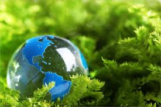
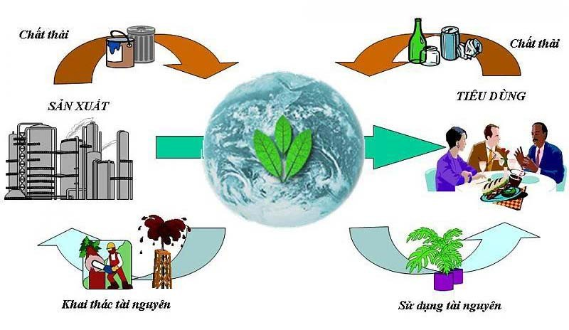
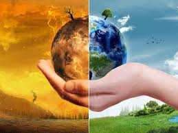

Môi trường tự nhiên bao gồm các nhân tố thiên nhiên như vật lý, hóa học, sinh học, tồn tại ngoài ý muốn của con người, ít nhiều cũng sẽ chịu tác động của con người. Đây là nơi cung cấp cho ta không khí để thở, đất để xây dựng nhà cửa, trồng cấy, chăn nuôi, cung cấp cho con người các loại tài nguyên khoáng sản cần cho sản xuất, tiêu thụ và là nơi chứa đựng, đồng hóa các chất thải, nơi giải trí…
Môi trường xã hội: đây là tổng thể các mối quan hệ của con người, đó là những cam kết, luật lệ, thể chế, cam kết, quy định, ước định ở cá cấp khác nhau. Môi trường xã hội định hướng hoạt động của con người theo một khuôn khổ nhất định, tạo nên sức mạnh tập thể thuận lợi cho sự phát triển.
Không chỉ có 2 môi trường trên, còn có môi trường nhân tạo, bao gồm tất cả các nhân tố do con người tạo nên, làm tiện nghi cho cuộc sống như nhà ở, phương tiện đi lại, công viên, khu vui chơi…
Theo những ý trên, theo nghĩa rộng thì mọi người có thể hiệu là tất cả các yếu tố như tài nguyên, không khí đất, nước, ánh sáng, cảnh quan, quan hệ xã hội.
Từ khái niệm trên cho thấy, môi trường có vai trò cực kì quan trọng và mang tính sống còn với con người.
Thứ nhất:môi trường cung cấp các nguồn tài nguyên thiên nhiên cần thiết như đất nước, rừng, khoáng sản, vệ sinh biển cho cuộc sống và cách hoạt động sản xuất.
Thứ hai:môi trường chứa đựng các chất thải và ô nhiễm từ các hoạt động sản xuất và sinh sống của con người.
Thứ ba:môi trường cung cấp các dịch vụ môi trường hay hệ sinh thái (đa dạng, toàn vẹn hệ sinh thái, và ngăn cản bức xạ tai cực tím) giúp hỗ trợ các sự sống trên Trái Đất mà không cần bất kỳ hành động của con người.
Thứ tư: môi trường là nơi tạo nên các giá trị tâm lý, thẩm mỹ và tinh thần của môi trường.
Vai trò to lớn của môi trường với cuộc sống
Môi trường hiện nay đang bị ô nhiễm nghiêm trọng, chắc hẳn đây là điều mà ai cũng biết. Đặc biệt là ô nhiễm không khi, ô nhiễm nguồn nước, đất,… điều đó đã và đang đe dọa tới cuộc sống của con người. Ở các nước đang phát triển như Việt Nam, việc khai thác bừa bãi các nguồn lợi từ thiên nhiên đã làm cạn kiệt nguồn tài nguyên. Và ảnh hưởng nghiêm trọng tới môi trường. Chính điều đó càng đồng nghĩa với việc cuộc sống của con người sẽ thêm khó khăn hơn.
Ô nhiễm môi trường được hiểu là việc chuyển các chất thải hoặc năng lượng vào môi trường đến mức có khả năng gây hại đến sức khỏe con người, sự sống của các loài sinh vật, làm giảm chất lượng môi trường.
Môi trường ô nhiễm điển hình như khi thiên nhiên, khí hậu ngày càng khắc nghiệt,nắng nóng nhiệt độ cao, mưa bão, lũ quét xuất hiện thất thường, suy giảm nguồn tài nguyên rừng, ô nhiễm môi trường xảy ra trên diện rộng, hàng loạt loài động vật bị tuyệt chủng hay đứng trước bờ vực tuyệt chủng, cháy rừng trên diện rộng… Đó là các vấn đề về môi trường mà chúng ta đã và đang phải đối mặt.
Con người đã ngày càng tác động quá nhiều đến môi trường, việc khai thác đến mức cạn kiệt các nguồn tài nguyên, thải nhiều chất độc làm cho môi trường không còn khả năng tự tái sinh. Biểu hiện dễ thấy nhất là các hậu quả như cháy rừng, biến đổi khí hậu, hiện tượng hiệu ứng nhà kính, băng tan, mưa axit,…
Với tình trạng ô nhiễm môi trường đến mức trầm trọng như hiện nay thì muốn bảo vệ môi trường cần có sự chung tay giúp sức của tất cả mọi người. Bảo vệ môi trường là vấn đề sống còn của nhân loại để giữ gìn và bảo vệ cuộc sống của toàn thể mọi người. Mỗi chúng ta hãy cùng chung tay vì một môi trường xanh và không ô nhiễm.
Môi trường đang dần bị ô nhiễm vì quá trình công nghiệp hóa
Môi trường sống ngày càng ô nhiễm, nếu chúng ta không có những biện pháp hành động tích cực sẽ đẩy tình trạng này càng nghiêm trọng hơn. Cần có cách bảo vệ môi trường thiết thực nhất.
Ô nhiễm môi trường ảnh hưởng đến sức khỏe con người, mất đa dạng sinh học, tầng ozon bị suy yếu, những ảnh hưởng đến quần thể sinh vật và môi trường của chúng, ảnh hưởng đến ngành du lịch, ảnh hưởng đến ngành kinh tế
Môi trường sống ngày càng ô nhiễm, nếu chúng ta không có những biện pháp hành động tích cực sẽ đẩy tình trạng này càng nghiêm trọng hơn. Cần có cách bảo vệ môi trường thiết thực nhất.
Để có các biện pháp khắc phục ô nhiễm môi trường chúng ta cần thực hiện lâu dài, không phải ngày một ngày 2 mà cần thời gian dài. Các giải pháp bảo vệ môi trường có thể kể đến như:
Cây xanh chính là nguồn cung cấp oxi cho bầu khí không khí và là nguồn hấp thụ khí cacbon, giảm xói mòn đất và hệ sinh thái.Vì thể nên trồng nhiều cây xanh xung quanh nhà để được hưởng những không khí trong lành do cây tạo ra nên giữ gìn không chặt phá bừa bãi.
Nếu tất cả chúng ta sử dụng năng lượng, vận chuyển các dịch vụ khác nhau cẩn thận hơn, chúng có thể giảm lượng khí thải độc hại cho không khí, đất và nước. Bằng các lập kế hoạch bảo vệ môi trường, chúng ta có thể tạo nên sự khác biệt và giúp môi trường xanh, sạch, đẹp hơn.
Thuốc bảo vệ thực vật như các loại thuốc trừ sâu,…hay các loại hóa chất sử dụng trong vệ sinh hàng ngày là một trong những nguyên nhân gây ra các căn bệnh như ung thư Parkinson và các bệnh liên quan đến não. Vì vậy, nên sử dụng các loại dụng cụ, chất liệu có nguồn gốc từ thiên nhiên để bảo vệ sức khỏe và bảo vệ môi trường.Thuốc bảo vệ thực vật như các loại thuốc trừ sâu,…hay các loại hóa chất sử dụng trong vệ sinh hàng ngày là một trong những nguyên nhân gây ra các căn bệnh như ung thư Parkinson và các bệnh liên quan đến não. Vì vậy, nên sử dụng các loại dụng cụ, chất liệu có nguồn gốc từ thiên nhiên để bảo vệ sức khỏe và bảo vệ môi trường.
Chúng ta nên và cần thay đổi thói quen về việc sử dụng các nguồn năng lượng có thể tái tạo. Bất cứ khi nào con người cũng có thể sử dụng các năng lượng từ gió, ánh nắng mặt trời…
Đó đều là các loại năng lượng sạch vì việc sản xuất và tiêu thụ chúng không làm phát sinh khí thải gây hiệu ứng nhà kính như sử dụng các loại nhiên liệu hóa thạch.
Nhiều người có thói quen để nguyên phích cắm trong ổ điện ngay cả khi không dùng đến các thiết bị điện (TV, quạt, sạc điện thoại, máy tính…) Hành động này vô tình gây lãng phí một lượng điện tương đối lớn vì ngay cả trong chế độ chờ các thiết bị này cũng làm tiêu hao năng lượng điện. Do đó, tốt hơn hết, các bạn nên nhớ rút phích cắm ra khỏi ổ hoặc tắt nguồn tất cả các thiết bị điện khi không sử dụng.
Túi nilon phải mất đến hàng trăm, hàng nghìn năm mới có thể bị phân hủy sinh học, nên chúng có thể tồn tại trong môi trường và gây hại cho loài người cũng như rất nhiều sinh vật sống trong nước, trong đại dương… Hàng ngày, hàng năm để sản xuất ra 100 triệu túi nhựa phải tiêu tốn 12 triệu barrel dầu hỏa. Vì vậy hãy sử dụng giấy hay các loại lá, giỏ tre, nứa… để gói sản phẩm thay vì sử dụng loại túi này.
Hạn chế sử dụng giấy giúp cho tần suất chặt phá cây để sản xuất giấy sẽ giảm, từ đó giảm lượng khí thải CO2 để giúp bảo vệ rừng tự nhiên và hệ sinh thái rừng cung cấp.
Giảm chất thải rắn ra ngoài môi trường, hãy tiết kiệm giấy bằng cách tái sử dụng khoảng 6 lần trước khi chôn lấp hoặc đốt bỏ chúng. Lúc này sẽ làm giảm thiểu nước thải, cải thiện chất lượng nước hiệu quả.
Đây là một trong những cách phổ biến và được ưu tiên nhiều nhất để giúp bảo vệ môi trường hiện nay, với cách này ta có thể tận dụng chất thải nhựa để tạo ra những sản phẩm mới có ích trong cuộc sống.Việc ưu tiên sử dụng các sản phẩm tái chế sẽ làm sạch môi trường hiệu quả, tái sử dụng tài nguyên đồng thời tạo việc làm cho người lao động.
Môi trường sống ảnh hưởng sâu sắc đến sức khỏe con người và sự phát triển của xã hội. Vì thế, sử dụng các tiến bộ của khoa học và công nghệ để bảo vệ môi trường là hoàn toàn cần thiết.
Thủ tướng chính phủ Việt Nam đã phê duyệt hoạt động này là một trong năm nhóm công nghệ ưu tiên trong định hướng phát triển khoa học và công nghệ đến năm 2020. Do vậy, ở nước ta đang từng bước quan tâm ứng dụng các giải pháp khoa học, công nghệ trong lĩnh vực môi trường để góp phần giảm thiểu ô nhiễm, bảo vệ nguồn tài nguyên thiên nhiên.
Cần có những biện pháp để xử lý ngay tình trạng ô nhiễm nguồn nước thải từ các khu đô thị lớn, khu công nghiệp tập trung, những nơi xả nước thải nhiều… để khắc phục được tình trạng ô nhiễm nguồn nước, góp phần lấy lại được sự trong sạch cho môi trường sống.
Trước thực trạng môi trường ngày càng ô nhiễm mà nguyên nhân chính từ việc sử dụng các nguồn năng lượng không thân thiện với môi trường, đó là lý do năng lượng sạch đang được quan tâm đầu tư hơn bao giờ hết.Theo đó, Thủ tướng Chính phủ đã ban hành Quyết định số 428/QĐ-TTg phê duyệt Đề án điều chỉnh Quy hoạch phát triển điện lực quốc gia, với quan điểm phát triển năng lượng tái tạo là khâu đột phá để bảo đảm an ninh năng lượng quốc gia và giảm thiểu những tác động tiêu cực tới môi trường.